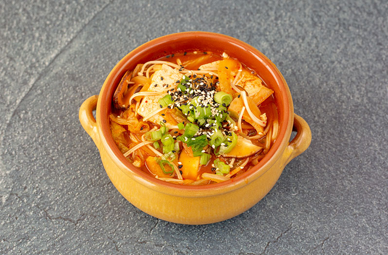

FALLOUT 76: FIRECAP SOUP

A deliciously spicy side dish, inspired by post-apocalyptic MMORPG Fallout 76, that is sure to leave you fired up while traveling through the wasteland.
Ingredients
Stock
- 3 ½ cups water
- 1 kombu
- 4 tbsp bonito flakes
- 4 dried shiitake mushrooms
- 2 green onions
Soup
- 2 cups kimchi, pieces and juice
- 2 tbsp soy sauce
- 3 tbsp gochujang
- 2 tsp garlic paste
- 1 tsp ginger paste
- 3 tsp sugar
- ½ tsp sesame oil
- ½ onion, sliced
- 4 shiitake mushrooms, sliced
- 1 king oyster mushroom, sliced
- 1 bunch of enoki mushroom, bottom removed
- firm tofu, cut into thick large squares
Garnich
- sesame seeds
- green onions, sliced
- rice
Instructions
- Over medium-high heat, add all the ingredients for the stock in a deep saucepan. Bring to a boil and then reduce the heat to medium-low. Simmer for 20 minutes. While it is simmering, make sure the water level stays the same. Strain the broth to remove all the pieces. Set the broth aside.
- Combine the kimchi juice, soy sauce, gochujang, garlic paste, ginger paste, sugar, and sesame oil in a small boil.
- Saute the onions, shiitake mushrooms, and king oyster mushrooms over medium-high heat in a pot. Saute until everything has softened and slightly browned, about 10 minutes.
- Add the bowl of mixed sauces and kimchi to the pot and stir in well. Allow to cook for about 2 minutes. Carefully add the stock and mix together really well.
- Bring to a boil. Reduce the heat to medium and bring the mixture to a light simmer. Add the tofu and cook uncovered for 8 minutes. After 8 minutes, flip the tofu and cook for another 5 minutes.
- Add the enoki mushrooms and cook for 3 more minutes. Serve over a bowl of rice and top with sesame seeds and green onions.